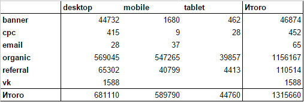
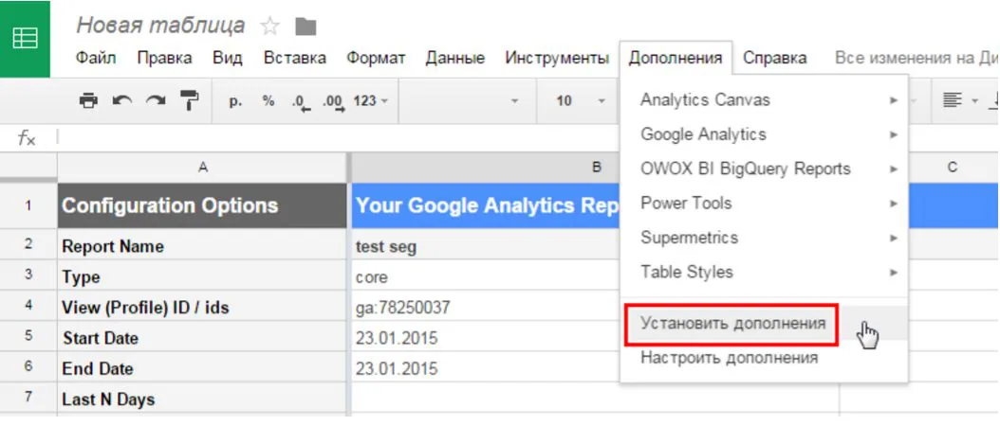
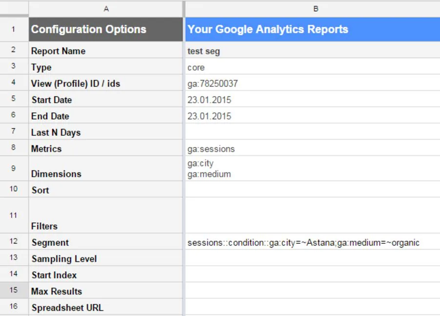
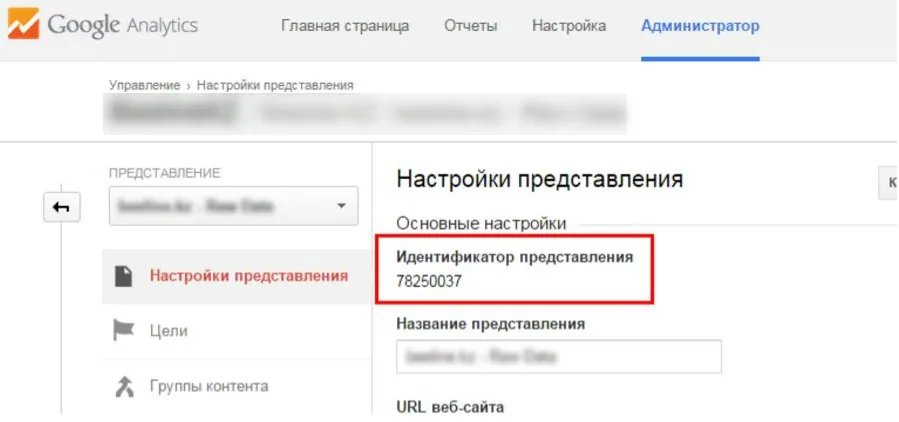
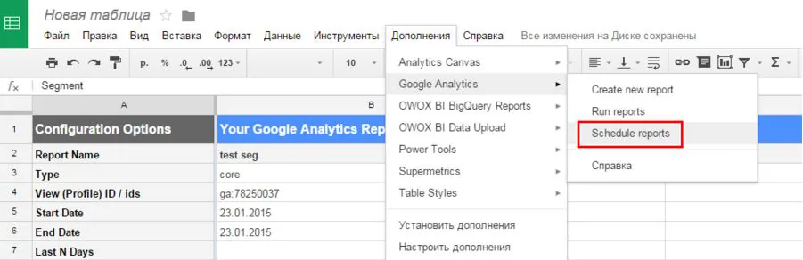
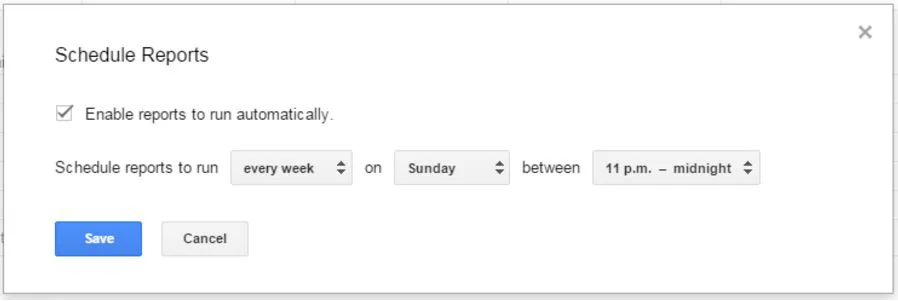

Дополнение Google Analytics для Google Taблиц — полное руководство

Если вы столкнулись с ограничениями по визуализации данных в Google Analytics, эта статья именно для вас.
Во время работы в интерфейсе Google Analytics специалисты рано или поздно сталкиваются с необходимостью составления отчетов, которые выходят за рамки возможностей данного инструмента. Яркий пример ограничения визуализации данных в Google Analytics — отсутствие возможности построения перекрестных таблиц по двум параметрам.


Пример перекрестной таблицы: количество сеансов из различных каналов по типу устройств.
На помощь специалисту спешат Google Таблицы с установленным дополнением Google Analytics.
1. Как установить дополнение
1.1. В меню Google таблиц заходим в «Дополнения», затем выбираем «Установить дополнения».

1.2. В поиске пишем «Google Analytics» и жмем «+ бесплатно».
1.3. Принимаем запрос.
2. Как настроить импорт данных из GA в Таблицу
2.1. В меню таблицы выбираем «Дополнения — Google Analytics — Create New Report».
2.2. Откроется диалоговое окно Create a new report, в котором вам необходимо выбрать:
2.2.1. Name Your Report — название для будущего отчета.
2.2.2. Select Account Information — нужный аккаунт GA — ресурс — представление.
2.2.3. Choose Metric and Dimensions — нужные для отчета параметры (dimensions) и показатели (metrics).
2.3. Нажать Create Report, после чего в таблице появится лист с настройками будущего отчета Report Configuration с таблицей следующего вида:

3. Пошаговая настройка основных параметров конфигурации будущего отчета
3.1. Report Name — будет использоваться для названия листа, на который будут выгружены данные из GA.
3.2. View (Profile) ID / ids — идентификатор представления. В дальнейшем вы можете переключить настроенную конфигурацию отчета на любой другой проект. Для этого достаточно зайти в GA, далее пройти по пути «Администратор — Настройки представления — Идентификатор отслеживания».

Затем необходимо скопировать идентификатор и вставить в поле «View (Profile) ID / ids» на листе «Report configurations» в таблице, в которую вы будете выгружать данные из GA.
3.3. Start Date / End Date — в этих полях вы устанавливаете период, за который вы хотите выгрузить данные из GA. Эти настройки используются, если не заполнено поле Last N Days.
3.4. Last N Days — в этом поле вы указываете количество дней, за которое планируете выгрузить данные. Если вы указали нужный период в полях Start Date / End Date, то поле Last N Days оставьте пустым. Использование данного поля наиболее эффективно, когда задается автоматическое обновление данных. А если вы хотите смотреть данные, например, за последние 7 дней, то подобную динамику диапазонов можно настроить и в полях Start Date / End Date, используя такие функции работы с датами, как Today.
3.5. Metrics — в данном поле вы перечисляете все показатели (metrics), которые планируете вывести в будущий отчет. Существует ограничение по количеству запрашиваемых показателей для одного отчета.
Вы можете выбрать не более 10 показателей для одного запроса данных.
Все показатели необходимо указывать, поставив перед названием пометку «ga:». Каждый следующий показатель указывается в ячейке с новой строки. Перейти на новую строку можно с помощью Ctrl+Enter.
3.6. Dimensions — в данном поле вы перечисляете все параметры (dimensions), которые планируете вывести в будущий отчет.
Существует ограничение по количеству запрашиваемых параметров для одного отчета. Вы можете выбрать не более семи параметров за один запрос к данным.
Все параметры необходимо указывать, поставив перед названием пометку «ga:». Каждый следующий параметр указывается с новой строки.
3.7. Sort — в поле «Sort» вы перечисляете параметры (dimensions) и показатели (metrics), по которым будут отсортированы данные. Если вы укажете в данном поле ga:sessions то отчет будет построен по показателю «кол-во сеансов по убыванию».
Если вы укажете в этом поле параметр или показатель, поставив перед ним знак «-» то есть -ga:sessions, то отчет будет построен с сортировкой по количеству сеансов по возрастанию;
3.8. Filters — в поле «Filters» вы можете задать любую фильтрацию данных по параметрам и показателям, указав «ga:» и название показателя или параметра. После этого вам нужно задать критерии фильтрации, используя следующие формулировки:
- равное (==), пример: ga:city==Odessa;
- не равное (!=), пример: ga:city!=Odessa;
- содержит (=@), пример: ga:city=@Odessa;
- не содержит (!@), пример: ga:city!@Odessa;
- равное регулярному выражению (=~), пример: ga:city=~Odessa|Kiev|Nikolaev;
- не равное регулярному выражению (!~), пример: ga:city!~Odessa|Kiev|Nikolaev.
Условия фильтрации необходимо перечислять через точку с запятой или запятую. Точка с запятой заменяет «и», запятая заменяет «или». Например, при указании в поле Filter:
- ga:city==Odessa;ga:medium==organic,
в таблицу будут импортированы данные по органическому трафику и по посетителям из Одессы. Если же написать в поле фильтра:
- ga:city==Odessa,ga:city==Nikolaev;ga:medium==organic,
в отчете будут выведены данные по органическому трафику, по посетителям из Одессы и Николаева. 3.9. Segment — очень схоже по смыслу, и по использованию с «Filters». С той разницей, что в данном поле можно задавать уровень фильтрации по сеансам или пользователям, и данный фильтр применяется на другом уровне.
Для тех, кто немного знаком с SQL, будет понятна следующая аналогия: фильтры в GA это clause HAVING в SQL, а сегмент в GA это clause WHERE в SQL.
Для тех, кто с SQL не знаком, попробую объяснить подробней. Разница в том, что фильтр применяется после агрегации данных, то есть после того, как данные будут сгруппированы по заданным вами параметрам для конечного отчета. Если вы задали фильтр в отчете по городам с условием вывести в отчет города, из которых было совершенно более 50 сеансов, то сначала Google Analytics подсчитает количество сеансов в разрезе городов, а потом уберет из отчета города, которые не соответствуют заданному условию (города с количеством сеансов менее 50). Поле работает иначе в случае, если вы применяете фильтрацию с использованием сегментов. Данные будут сначала отфильтрованы, а потом уже агрегированы.
Проще говоря, если вы хотите посмотреть отчет в разрезе операционных систем, но при этом учитывать только сеансы с мобильных устройств, то при использовании сегмента Google Analytics сначала отберет все сеансы, совершенные с мобильных устройств, а потом уже эти данные сгруппирует по операционным системам:
- users::condition:: — сегментация на уровне пользователей;
- sessions::condition:: — сегментация на уровне сеанса.
Далее процесс сегментации описывается идентично процессу фильтрации данных. Вы перечисляете условия сегментации, указываете необходимые параметры, показатели и их значения, используя такие же условия соответствия, как и в поле Filters:
- равное (==), пример: ga:city==Odessa;
- не равное (!=), пример: ga:city!=Odessa;
- содержит (=@), пример: ga:city=@Odessa;
- не содержит (!@), пример: ga:city!@Odessa;
- равное регулярному выражению «=~», пример: ga:city=~Odessa|Kiev|Nikolaev;
- не равное регулярному выражению «!~», пример: ga:city!~Odessa|Kiev|Nikolaev.
Напомню, условия сегментации необходимо перечислять через точку с запятой или запятую. Точка с запятой заменяет «и», запятая заменяет «или». Например, если указать в поле Segments:
- users::condition::ga:browser==Chrome,
в отчет будут выведены данные по всем пользователям, которые хотя бы одну из сессий на сайте осуществляли через браузер Chrome. Если ввести:
- sessions::condition::ga:browser==Chrome,
в отчет будут выведены данные только о сессиях, которые осуществлялись с браузера Chrome. Следующий пример:
- users::condition::ga:browser==Chrome;sessions::ga:city==Odessa
Этой строкой описывается сегмент пользователей, которые хотя бы в одной из сессий использовали браузер Chrome и хотя бы в одну из сессий заходили на сайт с одесского IP.
Я уже писал о возможностях сегментирования и когортного анализа в Google Analytics. Читайте подробности в этом посте.
4. Как загрузить данные из Google Analytics в таблицы Google
Для импорта данных необходимо зайти в меню «Дополнения — Google Analytics — Run Reports».
5. Как настроить автоматическое обновление данных в дополнении Google Analytics для Google Таблиц
5.1. Выбираем в меню «Дополнения — Google Analytics — Schedule reports».

5.2. Ставим галочку «Enable reports to run automatically». Потом выбираем частоту обновления (обновлять данные каждый час, каждый день, каждую неделю или каждый месяц), далее указываем точное время обновления.

P. S.: В качестве бонуса привожу справочник основных параметров и показателей Google Analytics. Справочник основных параметров
| Google Analytics | Название в GA Add-on |
|---|---|
| Источник | ga:source |
| Канал | ga:medium |
| Глубина просмотра | ga:pageDepth |
| Регион | ga:region |
| Город | ga:city |
| Длительность сеанса | ga:sessionDurationBucket |
| Дней с последнего сеанса | ga:daysSinceLastSession |
| Тип пользователя | ga:userType |
| Тип устройства | ga:deviceCategory |
| Число сеансов | ga:sessionCount |
| Группа объявлений | ga:adGroup |
| Кампания | ga:campaign |
| Ключевое слово | ga:keyword |
| Категория продуктов | ga:productCategory |
| Продукт | ga:productName |
Справочник основных показателей
| Google Analytics | Название в GA Add-on |
|---|---|
| Сеансы | ga:sessions |
| Отказы | ga:bounces |
| Длительность сеанса | ga:sessionDuration |
| Цель:№ (достигнутые переходы к цели№) | ga:goalXXCompletions |
| Достигнутые цели | ga:goalCompletionsAll |
| Пользователи | ga:users |
| Новые пользователи | ga:newUsers |
| Транзакции | ga:transactions |
| Доход от продукта | ga:itemRevenue |
| Показы | ga:impressions |
| Клики | ga:adClicks |
| Стоимость | ga:adCost |